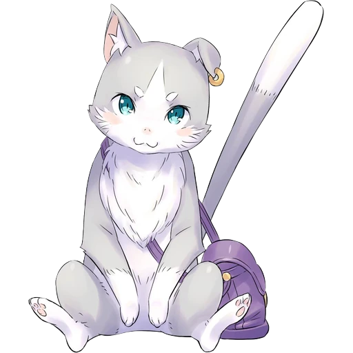
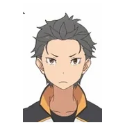
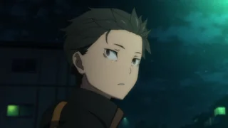
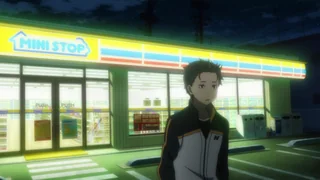
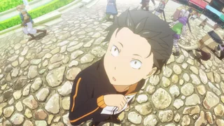
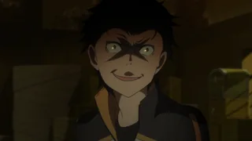
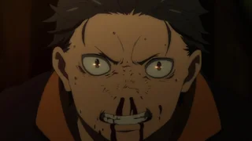
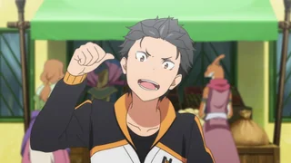
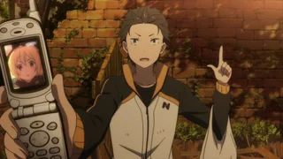
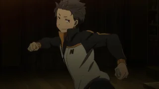

shrine — natsuki subaru
One page about one thing. Drag the windows around; they are just windows.
C:\> a corner of the internet for a boy who keeps dying

Every window is closed.
(or double-click the desktop)
Natsuki Subaru. Pulled out of a convenience store run and into another world, given no cheat power, no stats screen, no sword. What he gets is Return by Death: when he dies, time rewinds to a checkpoint he does not choose, and he is the only one who remembers.
He cannot tell anyone. Trying makes a hand close around his heart. So he carries every failure alone and walks back into the room where it happened.
Most isekai protagonists are competent on arrival. Subaru is the opposite: loud, self-pitying, convinced that suffering earns him something. The story agrees with none of it. It puts him in front of people who owe him nothing and lets him find out.
That is the appeal. He is not likeable because he is good at this. He is likeable because he is bad at it and keeps going anyway — and because the show is willing to say plainly that he is being a coward, and then let him hear it.
The turn is not a power-up. It is him finally saying the thing out loud, from zero, to someone who is not obliged to care.
| arc | verdict |
|---|---|
| 1 — the loop | the pitch, delivered |
| 2 — the mansion | best structure |
| 3 — the white whale | the one |
| 4 — the sanctuary | slow, then worth it |
| 5 — the watchtower | ask me later |
Ranked by how hard the rewatch hits, not by plot.

The mascot of this site. A spirit who spends most of his time as a small grey cat, is far more dangerous than that, and is very clear about whose side he is on.
Art on this site is used with permission of its owner. The character belongs to Kadokawa / White Fox.









Stills from the Re:Zero wiki gallery. Re:Zero is Kadokawa / White Fox.
This is a shrine, not a review. It exists because the small web used to be full of pages like it: one person, one obsession, no algorithm deciding whether it deserved to exist.
Spoilers are kept vague on purpose. If you have not watched it, go and do that instead of reading this.